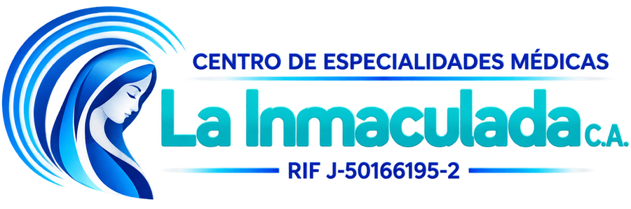

Tu salud, nuestra prioridad
Tendrás La Inmaculada en tu pantalla de inicio, como cualquier otra app. Es gratis y no ocupa casi espacio.
Elige la sede donde se realiza tu estudio o consulta. Puedes reservar en línea o escribirnos por WhatsApp.
Calle 1 N° 3-37, Santa Teresa, 120 m bajando del Seguro Social.
Av. Lucio Oquendo N° 3-112, Edif. Lisboa, planta baja.
Toca tu estudio para ver cómo prepararte.
Escríbenos antes de tu cita y te indicamos la preparación exacta.
Todos los estudios y consultas de cardiología se realizan en la Sede Principal (Santa Teresa), de lunes a sábado.
Estamos preparando el portal para que consultes tus resultados en línea desde aquí.
Mientras tanto, tus estudios se entregan en formato digital, en CD o en pendrive.
Calle 1 N° 3-37, Santa Teresa, 120 m bajando del Seguro Social, San Cristóbal.
WhatsApp: 0424-7074104
Av. Lucio Oquendo N° 3-112, Edif. Lisboa, planta baja, San Cristóbal.
WhatsApp: 0424-7007029
Lunes a viernes: 8:00 a. m. – 5:00 p. m.
Sábados: cardiología, 9:00 a. m. – 12:00 m.